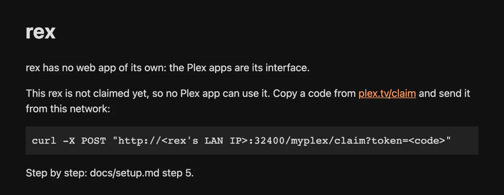

questions sur rex
Réponses courtes aux questions que les gens se posent avant d'installer rex, et juste après. Chaque réponse renvoie vers le guide qui contient les détails.
Avant d'installer
Qu'est-ce que rex ?
Un serveur multimédia pour les applications Plex officielles qui ne possède aucun fichier. Vos applications voient un serveur Plex de plus, avec les affiches, les saisons, l'historique de visionnage et « Continuer à regarder ». Une source indique à rex ce qui se trouve dans la bibliothèque et fournit chaque fichier. rex le diffuse quand vous appuyez sur lecture. Rien n'est téléchargé au préalable.
C'est un serveur à part entière. Ce n'est pas un plugin pour Plex Media Server et il n'en a pas besoin. Faites-le tourner à côté de Plex si vous voulez les deux. Installer rex explique les noms utilisés, et Passer de Plex à rex présente les deux façons de faire.
Combien ça coûte ?
rex est gratuit pour un usage personnel, sans offre payante. Son code source est public sous la licence PolyForm Noncommercial. L'usage commercial n'est pas autorisé. Chaque build est public sur GitHub Releases, sauf le build Android, qui n'est fourni que dans l'appli zurg+rex Android, réservée aux sponsors, un serveur Plex sur ton téléphone.
Certains éléments autour peuvent coûter de l'argent :
Mon compte Plex est-il en danger ?
rex n'est pas fait par Plex et Plex pourrait prendre des mesures contre un compte qui l'enregistre. Utilise un compte Plex gratuit tout neuf créé pour rex, puis partage-le avec ton propre compte. Ton historique, tes amis et ton Plex Pass restent sur ton propre compte. Ajouter rex à un compte Plex explique la marche à suivre. Utilise rex à tes propres risques.
Quelles applications Plex fonctionnent ?
Hors de chez vous, seul Plex Web a été testé.
Est-ce que ça lit la 4K, le HDR et le Dolby Vision ?
Oui. Les fichiers se lisent dans leur qualité d'origine : rex transmet le fichier tel quel à l'app, et c'est elle qui décide ce qu'elle peut afficher. Quand une app ne peut pas lire un fichier tel quel, rex le convertit, si FFmpeg est configuré (Converting video). Une conversion transforme le HDR et le Dolby Vision en image standard (Settings, Transcoder, Enable HDR tone mapping, activé par défaut), sur la puce graphique quand c'est possible. Avec le runtime OpenCL d'Intel installé, une petite machine Intel (un J4105) convertit du 4K HDR10 et du Dolby Vision profil 5 en 1080p à peu près en temps réel. Sans FFmpeg, un fichier que l'app ne peut pas lire affiche « This server is not powerful enough to convert video ». Si chaque titre affiche ce message sur chaque appareil, FFmpeg n'est pas la solution : voir
Plex pour iOS et Dolby Vision. Plex pour iOS 2026.20.0 reste bloqué à 0:00 quand il lit un fichier Dolby Vision tel quel. Un vrai Plex Media Server qui diffuse le même fichier se bloque de la même façon, donc le problème vient de l'app. Les fichiers HDR10 et SDR en 4K se lisent sans souci.
Ai-je besoin de Plex Pass ?
Non. rex indique aux applications Plex que le compte sur lequel il est enregistré possède Plex Pass, donc la lecture hors de chez vous et la conversion vidéo fonctionnent avec des comptes gratuits. La lecture hors de chez vous a été vérifiée dans Plex Web avec un compte gratuit des deux côtés ; les autres applications n'ont pas été testées hors de chez vous. Les éditions de films, le Dashboard, Downloads, le saut d'intro et de générique, ainsi que le reste des fonctionnalités Films et séries fonctionnent aussi. Une application peut tout de même appliquer ses propres règles.
Puis-je télécharger pour regarder hors ligne ?
Les Downloads sont bien là dans les apps Plex. rex prépare le téléchargement sur sa propre machine, soit sous forme de fichier original, soit converti avec FFmpeg, et le garde dans un dossier à côté de rex.db jusqu'à ce que l'app le récupère. Le compte sur lequel rex est enregistré peut toujours télécharger. Toute personne avec qui vous partagez doit avoir les téléchargements autorisés sur son partage (Partager rex). L'app peut aussi appliquer ses propres règles. Un téléchargement converti n'inclut pas les sous-titres texte. Enregistrer un téléchargement sur un téléphone et le regarder hors ligne n'a pas encore été testé.
Plusieurs personnes peuvent-elles l'utiliser, chacune avec son propre historique ?
Oui. Chaque personne avec qui vous partagez rex se connecte avec son propre compte et récupère ses propres éléments vus, sa section Continuer la lecture, ses notes et ses playlists. Chacune peut copier son historique depuis un ancien serveur Plex (Importer votre historique de visionnage). Partager rex avec la famille et les amis détaille les étapes, y compris les utilisateurs gérés pour les enfants.
Quel matériel faut-il ?
Une machine qui reste allumée, sous Linux (amd64 ou arm64, glibc 2.35 ou plus récent, donc Ubuntu 22.04 et supérieur), macOS (Intel ou Apple Silicon) ou Windows 64 bits ; ou l'application Android zurg+rex sur un appareil Android/Google TV (64 bits jusqu'à la nightly du 11 novembre 2026), qui fait tourner zurg et rex ensemble (réservé aux sponsors ; voir le guide Android).
Mémoire : prévoyez 1 Go. Sur une bibliothèque de 4,062 films et 656 séries, rex a utilisé moins de 500 Mo au démarrage et environ 730 Mo pendant la navigation dans la bibliothèque. La conversion vidéo demande davantage en plus.
Disque : aucun pour les films. rex garde sa bibliothèque dans rex.db. Les téléchargements et les images produites par l'analyse (aperçus de navigation, images de chapitres) sont aussi stockés à côté, si vous les utilisez.
Conversion : uniquement avec FFmpeg. Une puce graphique la rend rapide : un film en 1080p converti sur une petite puce Intel démarre en environ 2 secondes. Les puces utilisées par rex sur chaque système sont décrites dans Par plateforme : sur macOS, la conversion se fait toujours sur le processeur.
Est-ce que ça lit mes fichiers locaux ?
Non. rex ne scanne jamais un dossier ni un disque, et n'a besoin d'aucun montage. Chaque fichier vient d'une source via HTTP. Les fichiers présents sur votre propre disque peuvent quand même être utilisés : il faut quelque chose qui les sert et qui signale leur existence à rex, comme le montre rex avec votre propre application.
Ça marche avec Usenet ?
Oui, via une source qui lit Usenet, comme zurg. rex ne parle jamais directement à un fournisseur Usenet : la source lit les fichiers et les sert à rex comme n'importe quel autre fichier. Configure zurg pour cela avec Usenet, puis dirige-le vers rex comme dans rex avec zurg.
Ai-je besoin de zurg ?
Non. zurg n'est qu'une source parmi d'autres. rex accepte tout ce qui parle son API de flux :
- rex avec votre propre application : toute application qui sert des fichiers via HTTP
- rex avec vos addons Stremio : catalogues provenant d'addons Stremio
- rex avec zurg : votre compte debrid ou Usenet
- Créer des addons rex : vidéos personnelles, enregistrements ou chaînes, avec un programme à vous, et trois tutoriels pour bien commencer
Plusieurs sources peuvent alimenter les mêmes bibliothèques Movies et TV.
Dois-je ouvrir un port ?
Pas à la maison ? Les apps Plex sur ton réseau domestique trouvent rex sans modifier le routeur. app.plex.tv fonctionne aussi via l'adresse HTTPS que donne rex-direct pour un rex réclamé.
rex a besoin de sa propre adresse pour regarder hors de chez toi ou pour un autre foyer. La solution la plus simple est une seule redirection de port (rex-direct). Avec IPv6 et sans IPv4 publique, utilise rex-direct over IPv6. Tailscale serve ne nécessite aucune redirection de port sur les appareils qui font tourner Tailscale. Use it outside your home compare les options.
Que ne fait-il pas ?
Il n'y a pas de tuner ni de DVR. La musique, la TV en direct et les photos ont besoin d'une source qui les envoie. Voir Musique avec rex et TV en direct avec rex. zurg envoie les bandes dessinées sous forme de photos, que Plex Web affiche. Les mixes radio et les stations de Plexamp ne sont pas disponibles. rex n'a pas de relais, donc l'utilisation à distance nécessite sa propre adresse (Utiliser hors de chez vous).
Après l'installation
Pourquoi l'application affiche-t-elle une version de Plex et « Check for Updates » ?
rex se présente aux applications et à plex.tv comme un Plex Media Server, si bien que les applications affichent un numéro de version de Plex Media Server. Ce numéro n'est pas celui de rex. Check for Updates répond toujours que le serveur est à jour : rex ne se met jamais à jour tout seul. Pour mettre rex à jour, télécharge une version nightly plus récente comme indiqué dans Updating.
Pourquoi mon navigateur sur port 32400/web n'affiche-t-il aucune bibliothèque ?
rex n'a pas d'application web à lui. Ouvrir http://<rex's LAN IP>:32400/web affiche une courte page d'état. Regardez dans une application Plex ou dans un navigateur sur app.plex.tv.

Qu'est-ce qui sort de ma machine ?
- plex.tv, au démarrage puis une fois par jour, inscrit ou non : l'id, le nom et la version du serveur, pour lire la liste publique des versions de Plex et trouver le numéro de version le plus récent.
- plex.tv, une fois inscrit sur un compte Plex : le claim, les adresses du serveur (son adresse LAN et ses adresses HTTPS) et les noms de ses bibliothèques.
- Le service de métadonnées de Plex, une fois inscrit : l'id de chaque titre, pour obtenir son nom, son affiche, son résumé et ses épisodes. Une recherche de sous-titres, via Search Subtitles ou le réglage automatique de sous-titres d'une personne, envoie le nom du fichier et son empreinte.
- Les hôtes d'images, quand une app les affiche : les requêtes pour les affiches et les images que vos sources indiquent.
- DMM, pour rex-direct, une fois inscrit puis toutes les 6 heures : l'id du serveur, son token sur le compte Plex et son IP LAN. DMM vérifie auprès de plex.tv que le serveur est bien le vôtre, voit votre IP publique et oriente vos noms rex-direct vers celle-ci et vers l'IP LAN. Si la machine a une adresse IPv6 globale, rex l'envoie aussi, une minute après son démarrage (ou après le claim) puis toutes les 6 heures, et à chaque fois que DMM s'y connecte pour vérifier qu'elle atteint le même serveur. Désactivez-le avec
REX_DIRECT_URL=off. - Vos sources, quand vous lisez ou supprimez : les requêtes pour les fichiers que vous lisez, et les suppressions (voir ci-dessous).
- Votre ancien serveur Plex, uniquement si vous importez votre historique de visionnage : les requêtes pour votre historique de visionnage.
- Webhooks, uniquement si vous en configurez : les événements, vers les adresses que vous avez définies.
rex ne demande à personne ce qu'est une version. C'est la source qui décide et qui le dit à rex. zurg, par exemple, le demande à DMM (Pourquoi DMM place les fichiers).
Supprimer dans une application Plex supprime-t-il le fichier ?
Oui. Supprimer un film ou un épisode dans une app Plex, connecté avec le compte sur lequel rex est enregistré, supprime ses fichiers à la source, comme un serveur Plex supprime des fichiers de son disque. Une source sur un compte debrid, comme zurg, les supprime chez le fournisseur. Si la source refuse, le titre reste et l'app indique qu'il n'a pas pu être supprimé. Les personnes avec qui vous partagez ne peuvent pas supprimer. Supprimer depuis une app Plex explique comment désactiver cette option.
Rien ne se lance, ou toutes les applications disent que la machine n'est pas assez puissante
Regardez le journal de rex juste après avoir appuyé sur Lecture. upstream failed ou 502 dans ce journal signifie que rex ne peut pas joindre votre source à l'adresse que la source lui a donnée, et installer FFmpeg ne règle pas ce problème. La cause habituelle est zurg dans Docker Desktop sous Windows ou macOS. La ligne upstream failed de rex with zurg ou de rex with your own app vérifie l'adresse et indique ce qu'il faut changer. Si seuls certains fichiers échouent, souvent uniquement dans un navigateur web, l'appareil ne peut pas les lire tels quels : configurez Converting video.
Un titre est mal associé. Comment corriger ?
C'est la source qui décide ce qu'est chaque fichier, et rex affiche ce titre. Connecte-toi avec le compte sur lequel rex est enregistré et utilise Fix Match : rex garde ton choix, et une source peut le relire pour le garder comme correspondance de cette version, comme le fait zurg (Pourquoi DMM place les fichiers).
Où trouver de l'aide ?
Obtenir de l'aide indique où poser vos questions et quoi inclure : le forum rex-support sur Discord, ainsi que l'aide à distance pour les sponsors.